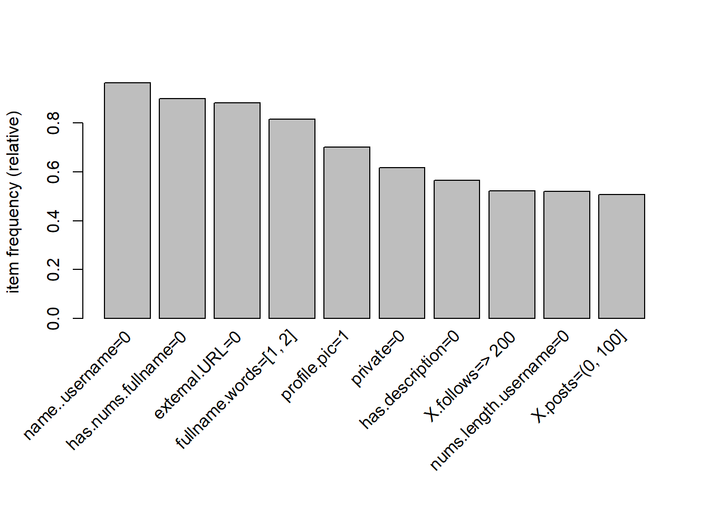
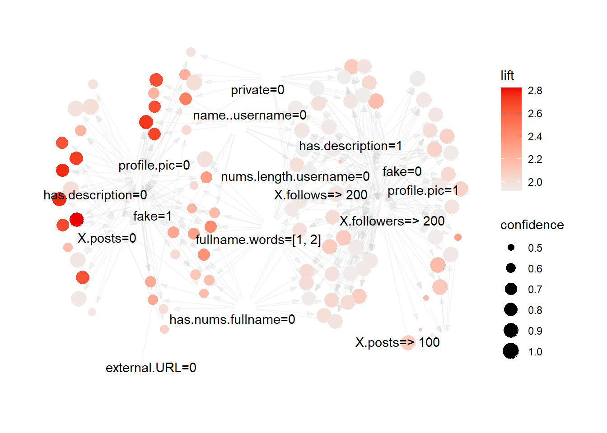
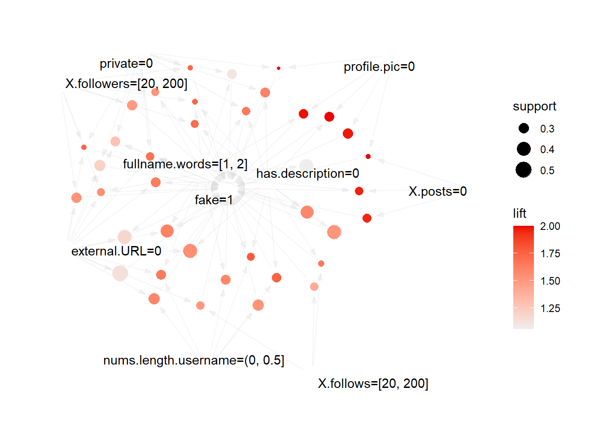
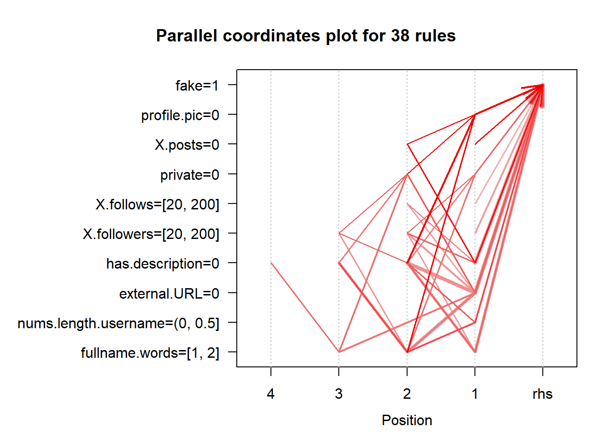

library(arules)
library(dplyr)
library(magrittr)4 Reglas de asociación
El análisis de reglas de asociación es una técnica fundamental en el campo de la minería de datos y el aprendizaje automático. Se utiliza para descubrir patrones interesantes y relaciones ocultas entre variables en conjuntos de datos. En particular, las reglas de asociación son útiles para identificar asociaciones frecuentes entre diferentes elementos en una base de datos transaccional.
En este trabajo, exploraremos el uso de reglas de asociación para el análisis de cuentas de Instagram. Utilizaremos el paquete arules en R para realizar este análisis. Nuestro conjunto de datos contiene una variedad de características de las cuentas de Instagram, como el número de seguidores, el número de publicaciones, si la cuenta es privada o no, entre otros.
A lo largo de este análisis, exploraremos cómo las diferentes características de las cuentas de Instagram están asociadas entre sí, identificando reglas de asociación significativas que nos ayuden a comprender mejor el ecosistema de esta red social.
dataset <- read.csv("datasets/train.csv")Antes de ponernos manos a la obra, tenemos que saber que arules no se lleva bien con las variables con un gran número de valores. Es más, solo se lleva bien con las binarias.
En nuestro dataset, hemos visto en el análisis exploratorio que hay 5 variables binarias (bien para arules) y las demás no lo son. Por suerte, gracias a los conocimientos que hemso adquirido durante la asignatura, sabemos que esto tiene solución.
Comprendiendo bien el significado de las variables y aplicando técnicas de discretización y agrupación, podemos convertir nuestras variables númericas a directamente binarias, o con pocos valores, y las que tengan pocos valores, podemos transformarlas a variables binarias.
Vamos a realizar un buen trabajo de pre-processing para este apartado, así nuestras reglas serán potentes y tendrán un conocimiento importante:
4.1 Pre-processing
Recordamos del apartado de análisis exploratorio que teníamos:
- Variables binarias:
- profile.pic
- name..username
- external.URL
- private
- fake
- Variables no binarias:
- nums.length.username
- fullname.words
- nums.length.fullname
- description.length
- X.posts
- X.followers
- X.follows
4.1.1 Variables binarias
Las añadimos directamente al dataset modificado que vamos a ir construyendo
datarules <- transmute(dataset,
profile.pic=profile.pic,
name..username=name..username,
external.URL=external.URL,
private=private,
fake=fake)4.1.2 Variables no binarias
Para las variables no binarias, podemos tener distintos puntos de vista, así que vamos a ir viendo cada variable:
4.1.2.1 nums.length.username
El ratio de números en el nombre de usuario de la cuenta es díficilmente binarizable, ya que no es trivial donde poner el punto medio. En el nombre de persona si resulta extraño tener números, pero en el nombre de usuario puede ser normal, no tiene porque estar relacionado directamente con que la cuenta sea falsa.
Podríamos binarizar simplemente en “tiene números o no tiene números”, ya que como vimos en el análisis exploratorio, teníamos prácticamente un 50-50, pero eso no exprimiría todo el conocimiento de los datos, pues lo que viene a representar esta variable es el ratio de carácteres númericos sobre la longitud del nombre.
Vamos a discretizar en 3 categorías:
- “0”
- “(0, 0.5]”
- “(0.5, 1]”
lu_discretize <- transmute(dataset,
nums.length.username=
ifelse(nums.length.username == 0,
"0", ifelse(nums.length.username <= 0.5,
"(0, 0.5]", "(0.5, 1]")))
datarules <- mutate(datarules,
nums.length.username=lu_discretize$nums.length.username)4.1.2.2 nums.length.fullname
Para esta variable, si vamos a binarizar, ya que no es lo normal tener un número en el nombre completo. Pondremos un 0 a las cuenas que no tengan números en el nombre completo y un 1 a las que si tengan,
lfn_binary <- transmute(dataset,
nums.length.fullname=
as.numeric(nums.length.fullname!=0))
datarules <- mutate(datarules,
has.nums.fullname=lfn_binary$nums.length.fullname)4.1.2.3 fullname.words
Para esta variable vamos a tomar una decisión que quizá no guste a todos los lectores, pero creemos que dará los mejores resultados (recordamos que esta variable representa el número de palabras en el nombre completo)
table(dataset$fullname.words)
0 1 2 3 4 5 6 10 12
57 283 187 34 7 4 2 1 1 Tener 0 palabras en el nombre no es lo normal, tener entre 1 y 2, lo es, tener 3 o más tampoco es normal. Esto obviamente subjetivo y está basado en la opinión subjetiva del escritor de este libro en base a su experiencia en el uso de Instagram.
Vamos a categorizar esta varaible en 3 rangos:
- “0”
- “[1, 2]”
- “> 2”
fnw_discretize <- transmute(dataset,
fullname.words =
ifelse(fullname.words == 0,
"0", ifelse(fullname.words <= 2,
"[1, 2]", "> 2")))
datarules <- mutate(datarules,
fullname.words=fnw_discretize$fullname.words)4.1.2.4 description.length
Vamos a binarizar esta variable, en el análisis exploratorio vimos que había mas cuentas sin descripción que con descripción y esto puede ser interesante.
dl_binary <- transmute(dataset,
description.length=
as.numeric(description.length!=0))
datarules <- mutate(datarules,
has.description=dl_binary$description.length)4.1.2.5 X.posts
Para esta variable pasaremos a 3 categorías, ya que creemos que dividen bien el conjunto de valores:
[1] "Cuentas sin publicaciones: 157"[1] "Cuentas con entre 0 y 100 publicaciones: 292"[1] "Cuentas con más de 100 publicaciones: 576"Por tanto estas categorías son:
- “0”
- “(0, 100]”
- “> 100”
p_discretize <- transmute(dataset,
X.posts =
ifelse(X.posts == 0,
"0", ifelse(X.posts <= 100,
"(0, 100]", paste0("> 100"))))
datarules <- mutate(datarules,
X.posts=p_discretize$X.posts)4.1.2.6 X.followers
Vamos a dividir de nuevo en 3 categorías que hemos considerado:
[1] "Cuentas con menos de 20 seguidores: 95"[1] "Cuentas con entre 20 y 200 seguidores: 223"[1] "Cuentas con más de 200 seguidores: 258"Por tanto estas categorías son:
- “< 20”
- “[20, 200]”
- “> 200”
fwrs_discretize <- transmute(dataset,
X.followers =
ifelse(X.followers < 20,
"< 20", ifelse(X.followers <= 200,
"[20, 200]", paste0("> 200"))))
datarules <- mutate(datarules,
X.followers=fwrs_discretize$X.followers)4.1.2.7 X.follows
Para los seguidos vamos a dividir en las mismas categorías que para los seguidores:
[1] "Cuentas con menos de 20 seguidos: 64"[1] "Cuentas con entre 20 y 200 seguidos: 211"[1] "Cuentas con más de 200 seguidos: 301"Por tanto estas categorías son:
- “< 20”
- “[20, 200]”
- “> 200”
fws_discretize <- transmute(dataset,
X.follows =
ifelse(X.follows < 20,
"< 20", ifelse(X.follows <= 200,
"[20, 200]", paste0("> 200"))))
datarules <- mutate(datarules,
X.follows=fws_discretize$X.follows)4.1.3 Resultados del pre-processing
Por tanto, después de nuestro preprocessing, nos quedan como variables de nuestro dataset:
- profile.pic
- Variable binaria que toma el valor 1 si la cuenta tiene foto de perfil, 0 si no tiene.
- name..username
- Variable binaria que toma el valor 1 si el nombre completo de la persona y el de usuario es el mismo, 0 si no.
- external.URL
- Variable binaria que toma el valor 1 si la cuenta tiene un enlace puesto en su perfil, 0 si no.
- private
- Variable binaria que toma el valor 1 si la cuenta es privada, 0 si es pública.
- nums.length.username
- Variable trinaria que toma los valores:
- “0” si no tiene números en el nombre de usuario.
- “(0, 0.5]” si el ratio de números es mayor a 0 y menor o igual a 0.5.
- “(0.5, 1]” si el ratio de números es mayor a 0.5 y menor o igual a 1.
- Variable trinaria que toma los valores:
- has.nums.fullname
- Variable binaria que toma el valor 1 si el nombre completo contiene números, 0 si no contiene.
- fullname.words
- Variable categórica que toma los valores:
- “0” si el nombre completo no tiene palabras.
- “[1, 2]” si el nombre completo tiene entre 1 y 2 palabras.
- “> 2” si el nombre completo tiene más de 2 palabras.
- Variable categórica que toma los valores:
- has.description
- Variable binaria que toma el valor 1 si la cuenta tiene una descripción, 0 si no tiene.
- X.posts
- Variable categórica que toma los valores:
- “0” si la cuenta no tiene publicaciones.
- “(0, 100]” si la cuenta tiene entre 1 y 100 publicaciones.
- “> 100” si la cuenta tiene más de 100 publicaciones.
- Variable categórica que toma los valores:
- X.followers
- Variable categórica que toma los valores:
- “< 20” si la cuenta tiene menos de 20 seguidores.
- “[20, 200]” si la cuenta tiene entre 20 y 200 seguidores.
- “> 200” si la cuenta tiene más de 200 seguidores.
- Variable categórica que toma los valores:
- X.follows
- Variable categórica que toma los valores:
- “< 20” si la cuenta sigue a menos de 20 cuentas.
- “[20, 200]” si la cuenta sigue a entre 20 y 200 cuentas.
- “> 200” si la cuenta sigue a más de 200 cuentas.
- Variable categórica que toma los valores:
- fake
- Variable binaria que toma el valor 1 si la cuenta es falsa, 0 si no lo es.
Con este nuevo dataset binarizado y discretizado, estamos listos para proceder al análisis de reglas de asociación utilizando el paquete arules en R. Este preprocesamiento nos asegura que las variables están en un formato adecuado para el análisis, lo que facilitará la identificación de patrones y asociaciones significativas.
4.2 Generando reglas
Nuestro dataset ha quedado así:
'data.frame': 576 obs. of 12 variables:
$ profile.pic : int 1 1 1 1 1 1 1 1 1 1 ...
$ name..username : int 0 0 0 0 0 0 0 0 0 0 ...
$ external.URL : int 0 0 0 0 0 1 0 0 0 1 ...
$ private : int 0 0 1 0 1 0 0 0 0 0 ...
$ nums.length.username: chr "(0, 0.5]" "0" "(0, 0.5]" "0" ...
$ has.nums.fullname : num 0 0 0 0 0 0 0 0 0 0 ...
$ fullname.words : chr "0" "[1, 2]" "[1, 2]" "[1, 2]" ...
$ has.description : num 1 1 0 1 0 1 1 0 1 1 ...
$ X.posts : chr "(0, 100]" "> 100" "(0, 100]" "> 100" ...
$ X.followers : chr "> 200" "> 200" "[20, 200]" "> 200" ...
$ X.follows : chr "> 200" "> 200" "[20, 200]" "> 200" ...
$ fake : int 0 0 0 0 0 0 0 0 0 0 ...Ahora arules puede generar las reglas fácilmente a partir de este dataset usando el algoritmo apriori. Directamente se podría aplicar apriori, pero lo suyo es convertir el dataset a un objeto transaccional primero.
4.2.1 Objeto transaccional
Antes de ello, para que la conversion se haga bien, tenemos que poner nuestras variables binarias como variables de tipo factor, si no la conversión a objeto transaccional no se hará bien:
datarules$profile.pic <- as.factor(datarules$profile.pic)
datarules$external.URL <- as.factor(datarules$external.URL)
datarules$name..username <- as.factor(datarules$name..username)
datarules$private <- as.factor(datarules$private)
datarules$has.nums.fullname <- as.factor(datarules$has.nums.fullname)
datarules$has.description <- as.factor(datarules$has.description)
datarules$fake <- as.factor(datarules$fake)Ahora si, converitmos:
Tdatarules <- as(datarules, "transactions")
Tdatarules@itemInfo$labels [1] "profile.pic=0" "profile.pic=1"
[3] "name..username=0" "name..username=1"
[5] "external.URL=0" "external.URL=1"
[7] "private=0" "private=1"
[9] "nums.length.username=(0, 0.5]" "nums.length.username=(0.5, 1]"
[11] "nums.length.username=0" "has.nums.fullname=0"
[13] "has.nums.fullname=1" "fullname.words=[1, 2]"
[15] "fullname.words=> 2" "fullname.words=0"
[17] "has.description=0" "has.description=1"
[19] "X.posts=(0, 100]" "X.posts=> 100"
[21] "X.posts=0" "X.followers=[20, 200]"
[23] "X.followers=< 20" "X.followers=> 200"
[25] "X.follows=[20, 200]" "X.follows=< 20"
[27] "X.follows=> 200" "fake=0"
[29] "fake=1" Como vemos, la conversión ha hecho justamente lo que queríamos. Por ejemplo, la variable X.posts, que le dimos tres valores distintos, se han convertido en 3 variables, que cada una de ellas es binaria. Es una técnica que podríamos haber hecho a mano, pero que ya que el comando as(…, “transactions”) lo hace por nosotros, no está mal aprovecharlo. Ahora tenemos 29 variables.
4.2.2 Apriori
rules <- apriori(Tdatarules, parameter = list(conf=0.1, supp=0.2, target="rules"))Apriori
Parameter specification:
confidence minval smax arem aval originalSupport maxtime support minlen
0.1 0.1 1 none FALSE TRUE 5 0.2 1
maxlen target ext
10 rules TRUE
Algorithmic control:
filter tree heap memopt load sort verbose
0.1 TRUE TRUE FALSE TRUE 2 TRUE
Absolute minimum support count: 115
set item appearances ...[0 item(s)] done [0.00s].
set transactions ...[29 item(s), 576 transaction(s)] done [0.00s].
sorting and recoding items ... [21 item(s)] done [0.00s].
creating transaction tree ... done [0.00s].
checking subsets of size 1 2 3 4 5 6 7 8 done [0.00s].
writing ... [6751 rule(s)] done [0.00s].
creating S4 object ... done [0.00s].length(rules)[1] 6751El hecho de haber usado un soporte de 0.05 y 0.1 ha sido nuestra elección para filtrar entre las miles de reglas que hay si no ponemos un límite. El uso de “target = rules” no es necesario, pero es para recordar que estamos buscando reglas. También se pueden buscar otras cosas como los conjuntos de items más frequentes.
Vamos a continuar filtrando estas reglas, para quedarnos con las mejores. Primero vamos a eliminar las reglas redundantes.
indices_no_redundantes <- which(!is.redundant(rules))
rules <- rules[indices_no_redundantes]
inspect(head(rules)) lhs rhs support confidence coverage lift count
[1] {} => {X.posts=> 100} 0.2204861 0.2204861 1 1 127
[2] {} => {X.posts=0} 0.2725694 0.2725694 1 1 157
[3] {} => {profile.pic=0} 0.2986111 0.2986111 1 1 172
[4] {} => {X.follows=[20, 200]} 0.3663194 0.3663194 1 1 211
[5] {} => {private=1} 0.3819444 0.3819444 1 1 220
[6] {} => {X.followers=[20, 200]} 0.3871528 0.3871528 1 1 223 Y vamos a quedarnos solo con las significativas con el método de fisher:
indices_significativos <- is.significant(rules, method="fisher")
rules <- rules[indices_significativos]De esta manera nos hemos quedado con muchas menos reglas, pero con mucha mas relevancia. No sirven de nada miles de reglas si luego ni si quiera podemos trabajar con ellas.
4.2.3 Reglas que inducen cuenta falsa
Lo que nos interesa son las reglas que nos lleven a que la cuenta es fake, vamos a observar estas:
reglas_fake <- subset(rules, rhs %in% "fake=1")[1] "Tenemos 38 reglas que nos llevan a que la cuenta es falsa."Vamos a observar las 5 mejores reglas ordenadas por lift:
reglas_fake_lift <- sort(reglas_fake, by="lift")
inspect(reglas_fake_lift[1:5]) lhs rhs support confidence
[1] {profile.pic=0, X.posts=0} => {fake=1} 0.2152778 1.0000000
[2] {profile.pic=0, has.description=0} => {fake=1} 0.2829861 1.0000000
[3] {profile.pic=0, private=0} => {fake=1} 0.2100694 1.0000000
[4] {profile.pic=0, fullname.words=[1, 2]} => {fake=1} 0.2725694 0.9936709
[5] {profile.pic=0} => {fake=1} 0.2951389 0.9883721
coverage lift count
[1] 0.2152778 2.000000 124
[2] 0.2829861 2.000000 163
[3] 0.2100694 2.000000 121
[4] 0.2743056 1.987342 157
[5] 0.2986111 1.976744 170 Por primera vez en lo que llevamos de libro hemos obtenido un conocimiento interesante para la detección de cuentas falsas de Instagram.
La primera regla, por ejemplo, nos está diciendo que con una confianza del 100% en nuestro dataset, las cuentas que no tienen foto de perfil ni posts, son falsas.
Lo mismo con las siguientes reglas que tienen 100% de confianza: - Las cuentas sin foto de perfil ni descripción, son falsas - Las cuentas sin foto de perfil y que son públicas son falsas
Obviamente esto no significan que cualquier cuenta de Instagram que encontremos en Internet es falsa si cumple dichas condiciones, si no que en nuestro dataset siempre es así, y nuestro dataset no es demasiado grande. Necesitaríamos un dataset mucho más grande para poder afirmar esto para un caso general, pero ya son conclusiones interesantes.
También vemos que la quinta regla nos dice que casi siempre que una cuenta no tiene foto de perfil, es falsa. Por ello no podemos hacer caso a lo que dicen las reglas sin más, tenemos que ver más opciones y usar más técnicas de análisis de datos, pero como primeros conocimientos, es un buen resultado.
Otra cosa a tener en cuenta es el soporte de las reglas. Vamos a ver que dicen las reglas con más soporte:
Mejores reglas ordenadas por soporte:
reglas_fake_support <- sort(reglas_fake, by="support")
inspect(reglas_fake_support[1:5]) lhs rhs support confidence
[1] {external.URL=0} => {fake=1} 0.5000000 0.5658153
[2] {fullname.words=[1, 2]} => {fake=1} 0.4322917 0.5297872
[3] {external.URL=0, fullname.words=[1, 2]} => {fake=1} 0.4322917 0.5942721
[4] {has.description=0} => {fake=1} 0.4305556 0.7607362
[5] {external.URL=0, has.description=0} => {fake=1} 0.4305556 0.7774295
coverage lift count
[1] 0.8836806 1.131631 288
[2] 0.8159722 1.059574 249
[3] 0.7274306 1.188544 249
[4] 0.5659722 1.521472 248
[5] 0.5538194 1.554859 248 Más soporte significa que esos patrones se dan mas veces en el dataset, pero sin tener en cuenta la confianza de estas reglas, no sirve de nada. Por ejemplo, la primera regla nos dice que si una cuenta no tiene enlace externo, entonces es falsa, y se da el 50% de las veces en nuestro dataset. Pero la confianza es solo del 56%. No es bueno fiarse simplemente de esta regla.
En vez de buscar reglas tan simples y generales como “dada una sola cosa entonces la cuenta es fake” podemos buscar reglas que tengan a la izquierda varios items, lo que hará que el soporte sea más bajo, pero puede que nos de reglas mas fiables.
Que una cuenta sea fake no va a depender únicamente de que no tenga foto de perfil o de que no tenga descripción, si no que probablemente cada condición tenga cierto peso y no sea tan sencillo.
Por todo esto no podemos fiarnos solamente del soporte de la regla, y tenemos que mirar también la confianza. O mejor aún, el lift.
4.2.4 Reglas que inducen cuenta real
Antes de buscar reglas con más items en la parte izquierda, vamos a ver las reglas que nos llevan a que la cuenta no es falsa.
reglas_reales <- subset(rules, rhs %in% "fake=0")[1] "Tenemos 138 reglas que nos llevan a que la cuenta es real."Vamos a ver las reglas con mayor lift:
reglas_reales_lift <- sort(reglas_reales, by="lift")
inspect(reglas_reales_lift[1:5]) lhs rhs support confidence coverage lift count
[1] {nums.length.username=0,
fullname.words=[1, 2],
has.description=1,
X.followers=> 200} => {fake=0} 0.2013889 0.9830508 0.2048611 1.966102 116
[2] {profile.pic=1,
name..username=0,
nums.length.username=0,
fullname.words=[1, 2],
has.description=1} => {fake=0} 0.2378472 0.9785714 0.2430556 1.957143 137
[3] {profile.pic=1,
nums.length.username=0,
fullname.words=[1, 2],
X.followers=> 200,
X.follows=> 200} => {fake=0} 0.2222222 0.9770992 0.2274306 1.954198 128
[4] {X.posts=> 100,
X.followers=> 200} => {fake=0} 0.2013889 0.9747899 0.2065972 1.949580 116
[5] {profile.pic=1,
nums.length.username=0,
has.description=1,
X.followers=> 200} => {fake=0} 0.2552083 0.9735099 0.2621528 1.947020 147Son bastantes interesantes y precisamente tienen el componente que comentabamos antes. No son reglas tan generales como “si tiene foto de perfil la cuenta es real”, si no que tiene en cuenta mucho mos detalles, como or ejemplo la segunda regla. Con un 97.85% de confianza, si la cuenta tiene foto de perfil, el nombre real y el de usuario son distintos, tiene entre 1 y 2 palabras en el nombre real y tiene descripción, entonces, es real.
Estas reglas son muy interesantes y nos dan pistas y conocimiento sobre que elementos son claves a la hora de ver si una cuenta es falsa o no.
4.2.5 Reglas con más de 6 items
Vamos ahora a buscar reglas que tengan al menos 6 items en total, (con la idea de que tengan 5 en la parte izquierda y 1 en la derecha), para ver que tipo de reglas podemos conseguir.
big_rules <- apriori(Tdatarules, parameter =
list(conf=0.1, supp=0.2, minlen=6, target="rules"))Apriori
Parameter specification:
confidence minval smax arem aval originalSupport maxtime support minlen
0.1 0.1 1 none FALSE TRUE 5 0.2 6
maxlen target ext
10 rules TRUE
Algorithmic control:
filter tree heap memopt load sort verbose
0.1 TRUE TRUE FALSE TRUE 2 TRUE
Absolute minimum support count: 115
set item appearances ...[0 item(s)] done [0.00s].
set transactions ...[29 item(s), 576 transaction(s)] done [0.00s].
sorting and recoding items ... [21 item(s)] done [0.00s].
creating transaction tree ... done [0.00s].
checking subsets of size 1 2 3 4 5 6 7 8 done [0.00s].
writing ... [1351 rule(s)] done [0.00s].
creating S4 object ... done [0.00s].Eliminamos las reglas redundantes
indices_no_redundantes <- which(!is.redundant(big_rules))
big_rules <- big_rules[indices_no_redundantes]Y nos quedamos con las significativas
indices_significativos <- is.significant(big_rules, method="fisher")
big_rules <- big_rules[indices_significativos]Veamos las reglas que nos llevan a que la cuenta es falsa:
big_reglas_fake <- subset(big_rules, rhs %in% "fake=1")[1] "Tenemos 17 reglas con 6 o más items que nos llevan a que la cuenta es falsa."Las 5 más importantes ordenadas por lift:
big_reglas_fake_lift <- sort(big_reglas_fake, by="lift")
inspect(big_reglas_fake_lift[1:3]) lhs rhs support confidence coverage lift count
[1] {profile.pic=0,
external.URL=0,
has.nums.fullname=0,
fullname.words=[1, 2],
has.description=0} => {fake=1} 0.2187500 1 0.2187500 2 126
[2] {profile.pic=0,
name..username=0,
external.URL=0,
fullname.words=[1, 2],
has.description=0} => {fake=1} 0.2430556 1 0.2430556 2 140
[3] {profile.pic=0,
name..username=0,
has.nums.fullname=0,
fullname.words=[1, 2],
has.description=0} => {fake=1} 0.2152778 1 0.2152778 2 124Estamos viendo patrones que creíamos que no se daban en las cuentas falsas, como por ejemplo, que cuentas con 1 o 2 palabras en el nombre completo también pueden llevar a una cuenta falsa, y sin números en el nombre completo, con el nombre completo distinto del nombre de usuario…
Esto nos indica que detectar una cuenta falsa no es tan fácil como buscar lo que pensamos que no es normal, si no que es más complejo.
4.2.6 Reglas entre otros atributos
Ahora vamos a buscar reglas entre los distintos atributos del dataset, que no tengan nada que ver con la clasificación de si la cuenta es falsa o no, con la idea de encontrar reglas que nos permitan derivar unos atributos a partir de otros. Usaremos las reglas generadas y almacenadas en la variable rules.
Vamos a filtrar de forma que la regla no contenga nada referente a la variable fake, ni a la izquierda ni a la derecha. Vamos a filtrar también por reglas que tengan al menos 0.8 de confianza:
rules_sin_fake <- subset(rules,
!(rhs %pin% "fake=") &
!(lhs %pin% "fake=") &
confidence > 0.8)
paste("Tenemos", length(rules_sin_fake), "reglas con confidence > 0.8
y sin la variable fake")[1] "Tenemos 255 reglas con confidence > 0.8 \n y sin la variable fake"Ordenamos por lift:
rules_sin_fake_confidence <- sort(rules_sin_fake, by="lift")
inspect(rules_sin_fake_confidence[1:4]) lhs rhs support confidence coverage lift count
[1] {has.description=0,
X.posts=0} => {profile.pic=0} 0.2135417 0.8255034 0.2586806 2.764476 123
[2] {profile.pic=1,
X.posts=> 100} => {X.followers=> 200} 0.2048611 0.9440000 0.2170139 2.107535 118
[3] {X.posts=> 100} => {X.followers=> 200} 0.2065972 0.9370079 0.2204861 2.091925 119
[4] {profile.pic=1,
nums.length.username=0,
fullname.words=[1, 2],
X.follows=> 200} => {X.followers=> 200} 0.2274306 0.9357143 0.2430556 2.089037 131Vemos relaciones interesantes:
- Cuentas sin descripción ni publicaciones, no tienen foto de perfil
- Cuentas con más de 100 publicaciones, tienen más de 200 seguidores
- Cuentas con foto de perfil, sin numeros en el nombre de usuario, con un nombre real con 1 o 2 palabras y más de 200 personas seguidas, tienen más de 200 seguidores
Estamos viendo que nuestros datos tienen relaciones entre sí, algunas más o menos lógicas, y que hay ciertas cosas que nos dan pistas sobre si una cuenta es falsa o no.
4.2.7 Conjuntos de items frecuentes
Por último, vamos a buscar los conjuntos de items más frecuentes en nuestro dataset. Apriori, además de conseguirnos reglas, también nos permite conseguir los frequent itemsets
items <- apriori(Tdatarules, parameter = list(
supp = 0.2,
conf = 0.3,
target="frequent itemsets"))Apriori
Parameter specification:
confidence minval smax arem aval originalSupport maxtime support minlen
NA 0.1 1 none FALSE TRUE 5 0.2 1
maxlen target ext
10 frequent itemsets TRUE
Algorithmic control:
filter tree heap memopt load sort verbose
0.1 TRUE TRUE FALSE TRUE 2 TRUE
Absolute minimum support count: 115
set item appearances ...[0 item(s)] done [0.00s].
set transactions ...[29 item(s), 576 transaction(s)] done [0.00s].
sorting and recoding items ... [21 item(s)] done [0.00s].
creating transaction tree ... done [0.00s].
checking subsets of size 1 2 3 4 5 6 7 8 done [0.00s].
sorting transactions ... done [0.00s].
writing ... [1648 set(s)] done [0.00s].
creating S4 object ... done [0.00s].Vamos a ver los más frecuentes (ordenados por soporte)
frequent_items <- sort(items, by="support")
inspect(head(frequent_items)) items support count
[1] {name..username=0} 0.9652778 556
[2] {has.nums.fullname=0} 0.8993056 518
[3] {name..username=0, has.nums.fullname=0} 0.8888889 512
[4] {external.URL=0} 0.8836806 509
[5] {name..username=0, external.URL=0} 0.8506944 490
[6] {fullname.words=[1, 2]} 0.8159722 470 Observamos que lo más común en nuestro dataset es no tener el nombre de usuario igual al nombre real, con un 96.52% de veces, no tener números en el nombre real, no tener enlace externo…
Vamos a visualizarlo mediante el objeto transaccional. Veamos los 10 items más frecuentes:
itemFrequencyPlot(Tdatarules, topN = 10)
4.3 Visualización con arulesViz
arulesViz es una herramienta para visualizar y comprender las reglas de asociación generadas con arules en R. Permite representar gráficamente las relaciones entre elementos en nuestros datos, facilitando la identificación de patrones complejos.
Con arulesViz, podemos visualizar las reglas como grafos o diagramas de coordenadas paralelas, lo que nos ayuda a entender la importancia relativa de cada elemento.
Requieren un mínimo de entendimiento ya que no son gráficos tan intuitivos como uno de barras, pero al entenderlos correctamente, proporcionan mucha información muy útil de manera visual.
library(arulesViz)plot(rules, method = "graph", control = list(type = "items"),
shading = "lift", measure = "confidence")Available control parameters (with default values):
layout = stress
circular = FALSE
ggraphdots = NULL
edges = <environment>
nodes = <environment>
nodetext = <environment>
colors = c("#EE0000FF", "#EEEEEEFF")
engine = ggplot2
max = 100
verbose = FALSE
Este gráfico nos muestra cómo ciertos atributos están relacionados entre sí con base en el lift y la confianza. Por ejemplo, se puede observar que “fake=1” tiene una relación significativa con otros atributos como “X.posts=0” y “profile.pic=0”, lo que sugiere que estas combinaciones son más comunes de lo esperado y tienen alta confianza en la regla.
plot(reglas_fake, method = "graph")
“profile.pic=0” tiene un alto lift y soporte, lo que indica que es común encontrar cuentas sin foto de perfil en el conjunto de datos y que esta característica tiene una alta co-ocurrencia significativa con otros atributos. Las reglas asociadas a “fake=1” también tienen un alto soporte, sugiriendo que estas combinaciones son comunes en los datos.
plot(reglas_fake, method = "paracoord", control = list(reorder = TRUE))
Podemos ver que las reglas que tienen “X.posts=0” y “fake=1” también suelen tener valores específicos para otras variables como “X.followers” y “profile.pic”. Este gráfico facilita la identificación de patrones complejos y de cómo múltiples atributos se combinan en las reglas de asociación.
4.4 Conclusiones
Con las de reglas de asociación, hemos descubierto que nuestros datos contienen un conocimiento valioso y hemos identificado las primeras relaciones significativas entre las características de las cuentas de Instagram. Este análisis nos ha permitido derivar varias reglas que aportan información relevante sobre el comportamiento de estas cuentas y su clasificación como falsas o reales:
- Cuentas falsas (dentro de nuestro dataset):
- Con una confianza del 100% en nuestro dataset, las cuentas que no tienen foto de perfil ni publicaciones son falsas.
- Las cuentas sin foto de perfil y sin descripción también son falsas.
- Las cuentas sin foto de perfil y que son públicas son falsas.
- Cuentas reales (dentro de nuestro dataset):
- Con un 97.85% de confianza en nuestro dataset, las cuentas con foto de perfil, nombre de usuario distinto del nombre real, entre 1 y 2 palabras en el nombre real, y que tienen descripción, son reales.
- Las cuentas con foto de perfil, sin números en el nombre completo, nombre completo diferente del nombre de usuario, y con entre 1 y 2 palabras en el nombre real, son reales con una alta confianza en nuestro dataset.
- Reglas de asociación generales:
- Las cuentas sin descripción ni publicaciones, no tienen foto de perfil.
- Las cuentas con más de 100 publicaciones, tienen más de 200 seguidores.
- Las cuentas con foto de perfil, sin números en el nombre de usuario, con un nombre real de 1 o 2 palabras, y que siguen a más de 200 cuentas, tienen más de 200 seguidores.
- Itemsets más frecuentes:
- Tener el nombre de usuario distinto del nombre real
- No tener números en el nombre real
- No tener enlace en el perfil
Estas reglas nos muestran patrones interesantes y nos ayudan a entender mejor cómo ciertos atributos de las cuentas de Instagram se relacionan entre sí y con la autenticidad de la cuenta.
Sin embargo, es crucial tener en cuenta que estas conclusiones se basan en un conjunto de datos limitado. Para poder generalizar estos hallazgos a una población más amplia de cuentas de Instagram, necesitaríamos un dataset más grande y representativo.
Además, aunque las reglas de asociación nos han proporcionado una buena base de conocimiento, debemos seguir aplicando otras técnicas de análisis de datos para extraer aún más información y verificar la robustez de nuestros hallazgos. Métodos adicionales como la regresión y FCA pueden complementar y profundizar en el conocimiento obtenido hasta ahora, mejorando así nuestra capacidad de detectar cuentas falsas y entender el comportamiento de las cuentas de Instagram en general.